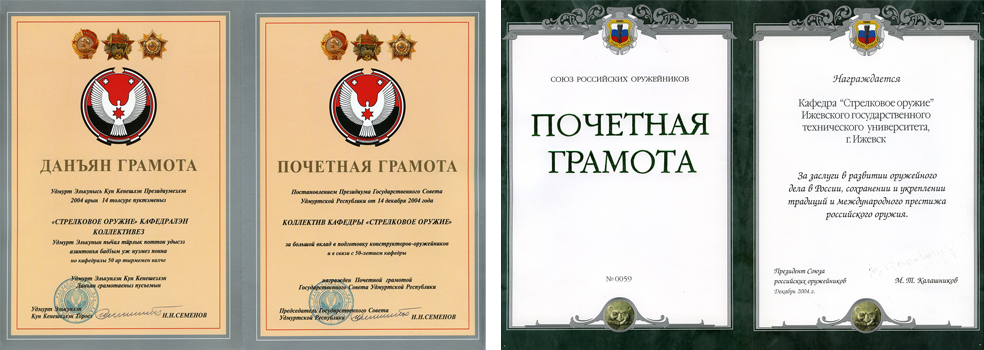
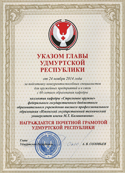

О КАФЕДРЕ

ЗАВЕДУЮЩИЙ КАФЕДРОЙ
Писарев Сергей Анатольевич
канидат технических наук, кандидат экономических наук, доктор технических наук, профессор, почетный работник ВПО РФ
АДРЕС
426069, г. Ижевск, ул. Студенческая, 7, корп. № 2, ауд. 305
ТЕЛЕФОН
(3412) 59-24-34
Кафедра «Стрелковое оружие», которой в 2014 году исполнилось 60 лет, обеспечивает подготовку конструкторов- оружейников в рамках специальности «Стрелково-пушечное, артиллерийское и ракетное оружие» по специализации «Стрелково-пушечное вооружение». За эти годы кафедра подготовила примерно 2500 специалистов, а имена многих ее выпускников , разработчиков первоклассного оружия, широко известны в нашей стране и за рубежом: Г.Н. Никонова, В.А. Ярыгина, А.И. Нестерова, Б.М. Зорина, И.Е. Дерюшева, В.М. Калашникова, В.Д. Стронского, М.Е. Драгунова.
Заведующим кафедрой является Писарев Сергей Анатольевич, кандидат технических наук (1976 г.), доктор технических наук (1988 г.), кандидат экономических наук (1993 г.), профессор (1990 г.), заслуженный работник высшей школы РФ, заслуженный деятель науки УР, заслуженный экономист УР, академик Академии военных наук РФ, лауреат премии имени М.Т. Калашникова (дважды).
Кафедра единственная в университете награждена двумя почетными грамотами Государственного Совета Удмуртской Республики, Союза Российских оружеников.
В 2014 году кафедра была награждена почетной грамотой Удмуртской Республики - высшей государственной наградой УР
